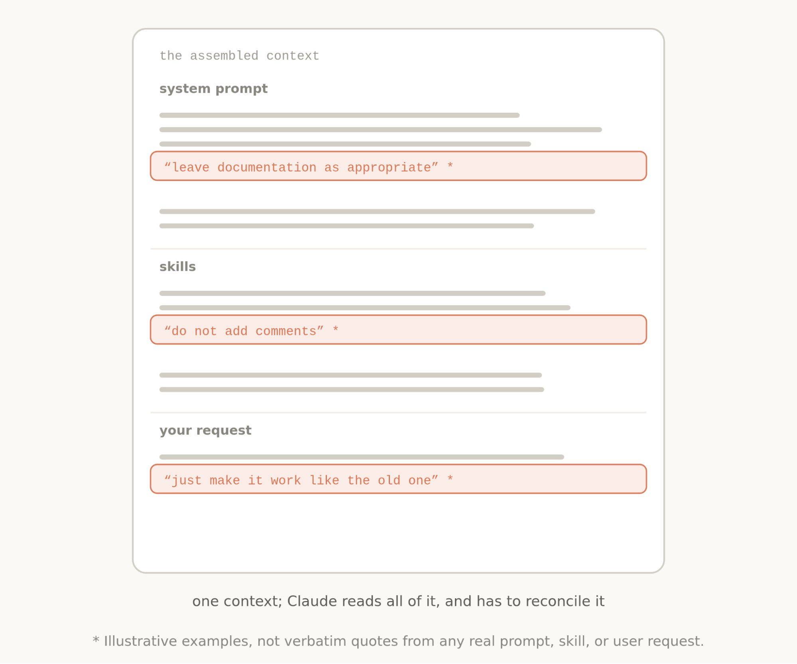
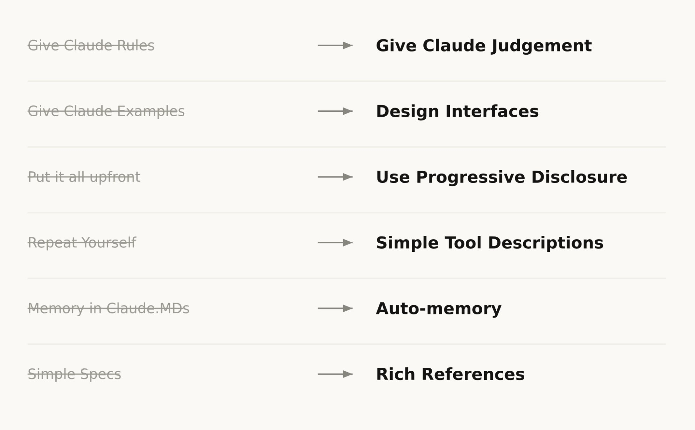
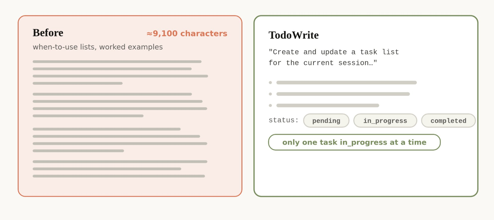
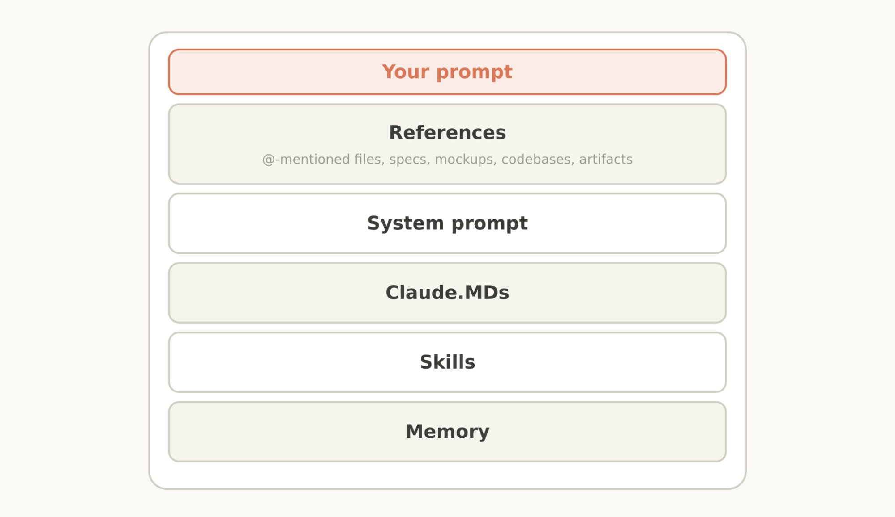

Claude 5 时代的新规则
The new rules of context engineering for Claude 5 models
Anthropic 把 Claude Code 的 system prompt 删了 80% 还能跑——Claude 5 自己会用判断力了。下面是 6 条 Then/Now 转向 + 4 类上下文怎么改 + 一条命令自动化。

THARIQ · @TRQ212 · 2026/07/24
我之前写过怎么给 Claude 5 这一代新模型写 prompt、怎么跟它迭代式地弄清你要建什么。
但当你给 Claude 发一条消息时，prompt 只是它拿到的 context 里的一小块。大部分 context 是从 system prompt、Skills、CLAUDE.md、memory 和其他来源拼起来的。我们管这叫 context engineering，它对 Claude Code 的产出、或你自己搭 agent 的产出影响巨大。
和 prompt 不一样，context 是跨很多请求通用的，所以不能写得太具体。怎么给 Claude 写这些通用 prompt 和指引——尤其当你不知道用户会发什么 prompt 时——是个难题。
随着 Claude 自身能力的进化，这件事出奇地难。最近我们注意到，给最新一代 Claude 模型写 prompt 的方式有一次大跳变。我们删掉了 Claude Code 的 system prompt 里超过 80% 的内容，给 Claude Opus 5 和 Claude Fable 5 这种模型用，在我们 coding 评测上没有任何可观测的下降。
下面是我们给这一代新模型写 prompt 学到的东西，以及你可以怎么用它来更新你自己的 context engineering。我们把这些最佳实践放进了 claude doctor：在 Claude Code 里用 /doctor 命令，让它帮你重新审视自己的 skills 和 CLAUDE.md 文件。
We removed over 80% of Claude Code's system prompt for models like Claude Opus 5 and Claude Fable 5 with no measurable loss on our coding evaluations.
— THARIQ · CLAUDE CODE @ ANTHROPIC
Unhobbling Claude
总体上，我们发现我们一直在过度约束 Claude Code——system prompt 里是这样，CLAUDE.md 和 skills 里也是这样。
比如，回头看我们自己内部用 Claude Code 的 transcript 时，我们会在同一个请求里看到好几条互相矛盾的信息——比如「文档该留就留」和「不准加注释」——system prompt、skills、用户请求自己撞到一起去了。

原文配图 · Thariq (@trq212) · 2026/07/24
一般情况下，Claude 能推断用户意图、给出正确答案，但 Claude 必须在这些重叠又互相矛盾的信息里更仔细地思考，才能决定怎么做。
这些约束当初是为了避免最坏情况，但现在我们发现可以删掉一大堆，让模型用上下文和判断力自己处理。
另外，Claude Code 现在工具也多了很多。以前 Claude 把 CLAUDE.md 当作 memory、information 和 guidance 的来源。现在我们有 memory、artifacts 和 skills，Claude 可以用它们造出新的方式来跨 session 加载和共享 context。
Then and Now · 6 myth busted
过去有不少 context engineering 的最佳实践，其实已经变成了 myth。包括：

原文配图 · Thariq (@trq212) · 2026/07/24
Claude Code 刚上的时候，我们需要确保 Claude 不会撞上最坏情况，比如删文件。这意味着我们会给出特别强的指引，哪怕它并不总是对的。比如，system prompt 里我们以前是这样写的：
OLD SYSTEM PROMPT在代码里：默认不写注释。绝不写多段 docstring 或多行注释块——一行短注释封顶。除非用户要求，否则不创建规划、决策或分析文档——从对话上下文里工作，不要走中间文件。
但对某一类 prompt 来说，这种指引就是错的。比如文档这块，用户可能有他自己的偏好，或者一段特别复杂的代码里某处就是需要多行注释。
即使这样，过去没有这些护栏，老模型写出来的注释在很多情况下是错的，我们只能接受这个 tradeoff。但新模型判断力更好，没有明确规则也能把这些决定处理得很漂亮。
NEW SYSTEM PROMPT新 system prompt 里我们写的是：写代码要读起来像周围的代码——匹配它的注释密度、命名风格和习惯。
工具使用的头号规则是给 Claude 看怎么用这些工具。到了最新一代模型，我们发现给例子反而把 Claude 困在了一小块探索空间里。

原文配图 · Thariq (@trq212) · 2026/07/24
比起给例子，多想想你的工具、scripts、files 的设计——Claude 拿到哪些参数、它们可以多有表现力？
比如 Todo 工具的例子，光把 status 列成 pending / in_progress / completed 三种枚举，就已经在暗示 Claude 怎么用。"同时只保留一个 in_progress"这条指引本身就划出了我们想要的行为。
Claude Code 当时只做 coding，system prompt 里塞了一大堆 code review 和 verification 的细节。这些信息不总是需要，但需要的时候就是决定性的。
后来，Claude Code 在 progressive disclosure 上变得很在行——在对的时机加载对的 context。比如我们把 verification 和 code review 移到了它们自己的 skills 里，Claude Code 可以按需调用。
但 progressive disclosure 不只是 skills，工具也用。我们有些工具是 "deferred loading"——agent 必须先用 ToolSearch 搜到完整定义才能用。这让我们能放更多工具（比如 Task 工具），用到之前都不占 context。
同一套思路也能套到你自己 CLAUDE.md 和 Skill.md 上。一个常见的 myth 是：你想把每一条可能用到的最佳实践都堆成一份中央仓库，因为 Claude 不会自己找。不如考虑做成一个文件树，需要时再加载。
早一代的 Claude 模型有时需要重复指引，或者比起开头的指引更听结尾的。这意味着 system prompt 里有时候会同时出现工具的引用和工具描述里的指引。
我们发现可以删掉这些重复，把"怎么用工具"放进工具描述里，不要写在 system prompt 里。
我们以前鼓励用户把东西存进 Claude 的 memory，用 # 热键自动写到 CLAUDE.md。现在 Claude 会自动存跟它的工作、跟你有关的 memory。
在 plan mode 里，Claude Code 重度依赖 markdown 文件做计划。把这些文件存成 plans 让 Claude 在需要时能回头看。另一个类似的最佳实践是把 specs 存进 codebase，让 Claude 在跨较长项目时能查。
但我们发现 Claude 能处理越来越复杂的 references 了。不再是简单的 markdown 文件，Claude 可以引用我们新 artifacts 功能生成的 HTML artifacts。
你也可以用代码形式给 Claude references。一份 spec 也可以是一个详细的测试套件，或者另一个 codebase 里 Claude 可以搬运的函数。
Rubrics 是另一种形式的 references。Rubrics 让 Claude 试着去验证你在某个领域里的品味（比如好的 API 设计长什么样），用 dynamic workflow 起一批带 rubric 的 verifier agents。
Applying this to your context
把这些串到一起，当你组装自己的 context 时，长什么样？

原文配图 · Thariq (@trq212) · 2026/07/24
System Prompt
system prompt 紧紧绑在产品 context 上。它告诉 Claude 它在哪个产品里工作、在做什么。对 Claude Code，你基本不会去改它；但如果你在搭自己的 agent harness，这里就是你应该花大量时间的地方。
CLAUDE.md
保持 CLAUDE.md 轻量、简短描述你这个 repo 是干嘛的，但把大部分 token 花在 codebase 里的 gotchas 上。比如，你可能把所有 type 都组织在一个大文件里、别处不放。不要去说那些"看一眼文件系统或 repo 就能知道的"的显而易见的事。
更详细的指引用 progressive disclosure：比如你对"怎么验证你的工作"有几条独特的指引，就做一个 verification skill，再从 CLAUDE.md 引用它。
Skills
把 skills 想成轻量指南，让 Claude 在需要时能找到信息。除非在特别关键的区域，否则不要把它们做得过度约束。
对于长的 skills，尽量用 progressive disclosure——拆成多个文件，分开存放。
最好的 skills 编码的是特别属于你、你的团队或你产品的 opinion、knowledge 或 best practices。
References
你可以用 @ 提文件把它们作为 references 加进来。References 让 Claude 能查到当前计划的深度信息。
这可以是 spec 文件、mockup，甚至是整个 codebase。一般来说你应该优先选代码形式的文件，因为它用 Claude 非常熟悉的语言、给出清晰高保真的指令。比如，一份设计的 HTML mockup 通常比"描述这个设计"或"截图"产生更好的结果。
Try simplifying
claude doctor 会自动帮你做这件事。
跨你的 system prompt、skills 和 CLAUDE.md，你可能需要像我们一样做一次简化。我们上线了一个新命令 claude doctor，它会自动帮你做这件事。关于给更高级模型写 prompt 的更多细节，可以看看我们的 Fable field guide。
FIRST MOVE · 第一步
今晚就把 /doctor 跑一遍——让它自动审视你现在的 CLAUDE.md / Skills / system prompt，把过度约束的部分圈出来。
SOURCES & CREDITS
引用与原文出处
-
ORIGINAL ARTICLE
The new rules of context engineering for Claude 5 models
作者：Thariq (@trq212) · 发布于 2026/07/24 · 2,857,807 浏览 · 12,776 赞 · 1,404 转推 · 26,345 收藏 · 335 回复
推文链接：https://x.com/trq212/status/2080710971228918066
文章链接：https://x.com/i/article/2080703729385512960 - AUTHOR · X https://x.com/trq212
- AUTHOR · WEBSITE thariq.io — Thariq 个人站
- RELATED · FABLE FIELD GUIDE https://claude.com/blog/a-field-guide-to-claude-fable-finding-your-unknowns — 关于给更高级模型写 prompt 的更多细节
- RELATED · EFFECTIVE CONTEXT ENGINEERING https://www.anthropic.com/engineering/effective-context-engineering-for-ai-agents — Anthropic 之前的 context engineering 博客（本文算续篇）
- INTERPRETATION 本文为完整翻译版本，按原文 intro + Unhobbling Claude + Then/Now 6 对 + Applying 4 类 + Try simplifying 的顺序逐节整理。6 对 Then/Now 每条都附原文旧规则 / 新规则的对照。所有 4 张内嵌配图完整保留并按位置插入。如需引用请以原文为准。
最反直觉的一条——你堆得越多的规矩、越长的 CLAUDE.md、越详细的 system prompt，反而越容易拖累 Claude 5。先删一刀试试，再跑一遍你的评测。
Claude 5 自己会用判断力——
你不需要替它把每条路都画死。
— Thariq · The new rules of context engineering for Claude 5 models